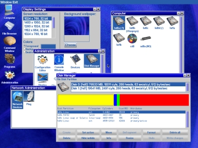

Welcome!
Visopsys is an alternative operating system for PC compatible computers. Under development since late 1997, this system is small, fast, and open source. It features a simple but functional graphical interface, pre-emptive multitasking, and virtual memory. Though it attempts to be compatible in a number of ways, Visopsys is not a clone of any other operating system. You can demo the distribution from a "live" CD or floppy disk ... (read more).
Features of Visopsys
- Small & fast
- Graphical user interface
- Fully multitasking
- 100% protected mode
- Open source, free software
News
[19.01.2014] - New look web site design by Jens Leon Wagner (www.fosforito.net)
[22.08.2013] - Version 0.72 is now available to download on the download page!